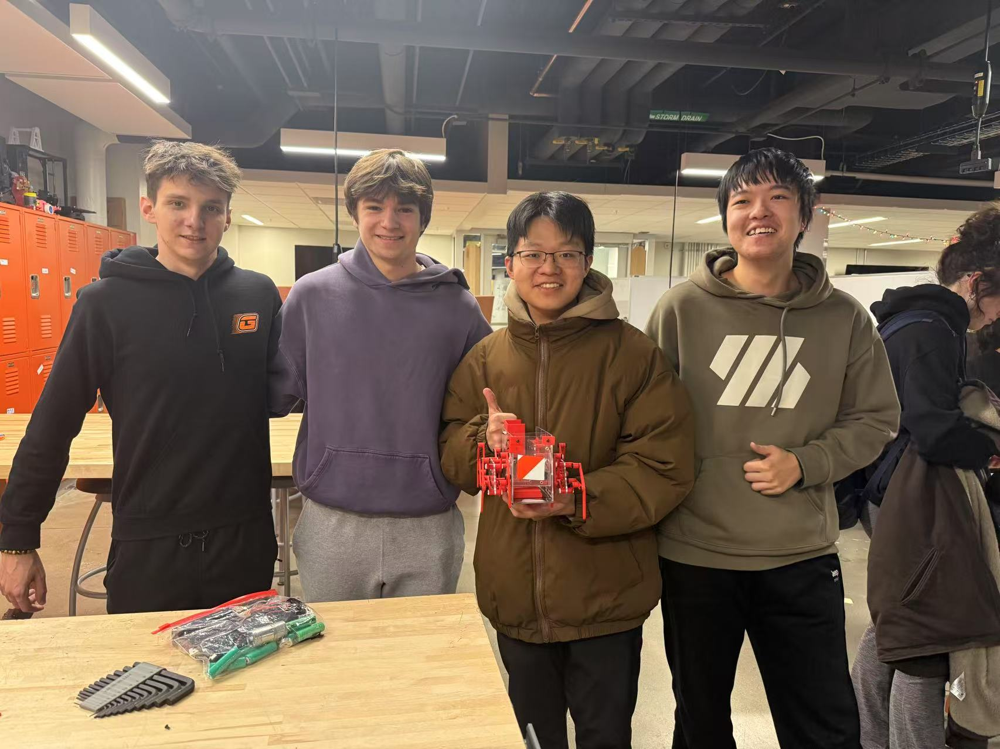
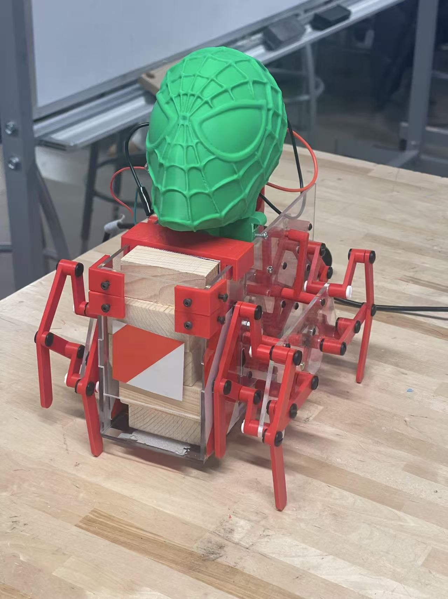
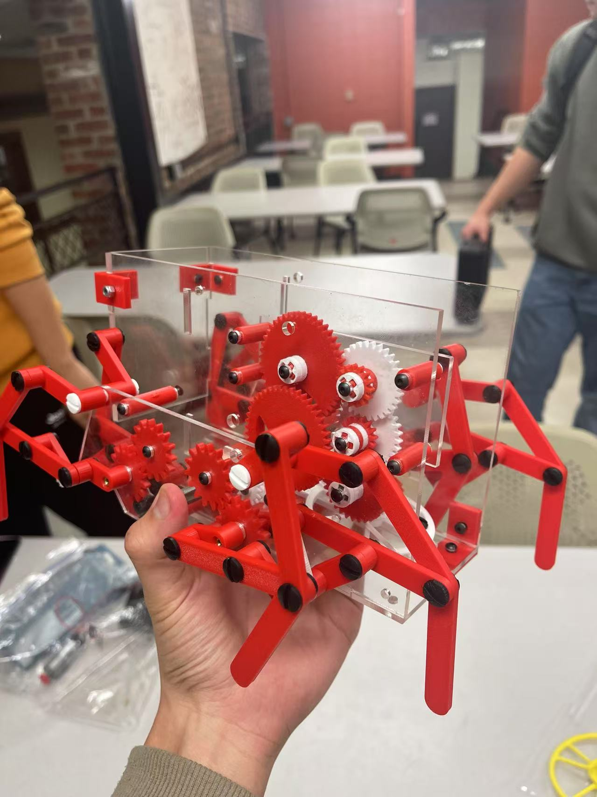

项目概述
把“会走”和“会投”同时做对的系统级项目
这个项目来自 ME370 课程，本质上更像一个真实的系统级问题，而不是单一机构设计练习。目标是做出一台能够自主行走、并在运动过程中按近似固定间距投放小包裹的八足机器人。
真正的难点不只是“让机器人动起来”，而是把前一个阶段已经完成的投放机构整合进移动平台，同时还要满足尺寸、预算、安全性、可制造性和可维护性等工程约束。
机械项目 / ME370 / Team 48
这是一个课程级机械系统设计项目：把 Klann linkage 行走机构、crank-slider 投放机构和一套共享传动系统整合到同一台单电机驱动的投递机器人里。
项目概述
这个项目来自 ME370 课程，本质上更像一个真实的系统级问题，而不是单一机构设计练习。目标是做出一台能够自主行走、并在运动过程中按近似固定间距投放小包裹的八足机器人。
真正的难点不只是“让机器人动起来”，而是把前一个阶段已经完成的投放机构整合进移动平台，同时还要满足尺寸、预算、安全性、可制造性和可维护性等工程约束。
系统结构
这台机器人主要由三个子系统组成：Klann linkage 行走系统、crank-slider 投放机构，以及把电机、轴、齿轮、亚克力板和包裹仓整合到一起的传动与壳体系统。
最关键的工程约束，是只有一台电机却要同时负责行走和投放，这使得齿轮比设计成为整个项目的中心。
我的贡献
我在这个项目里的主要贡献集中在系统集成层面。我负责投放模块、腿部机构和整体齿轮传动系统的集成 CAD 建模，同时围绕 2 米投放目标参与了传动比调优。
这意味着我要不断拆装、更换齿轮、重新测量，再重新装回去，而不是只停留在单独画某一个零件的层面。
困难与迭代
第一个核心问题是投放稳定性，第二个是直线行走，第三个则是传动比本身的迭代：这不是一个“能动就行”的项目，而是有明确目标的系统。
这也是这个项目值得保留在作品集里的原因：它不只是让机器人“能工作”，而是要不断理解为什么它会偏离目标，以及如何把它重新拉回目标附近。
结果摘要
演示视频
从 `project1` 文件夹整理进来的录屏，放在机械项目 3 右侧媒体区的最前面。
主照片

完整组装状态下最能代表项目的一张照片。
细节照片



用于展示结构密度与总装复杂度的补充照片。
视频 01 / 最终演示
展示机器人在较完整状态下进行整体运行的最终演示视频。
视频 02 / 运动与投放测试
补充展示行走状态、轨迹稳定性和投放节拍的测试视频。